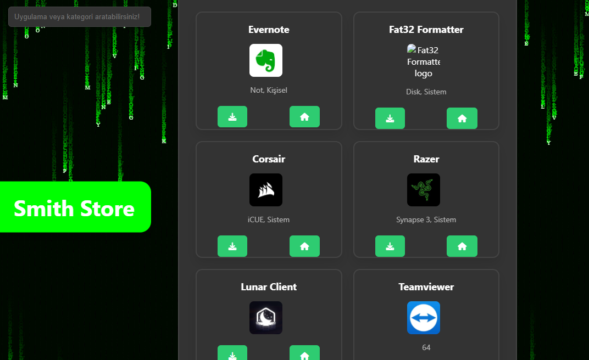
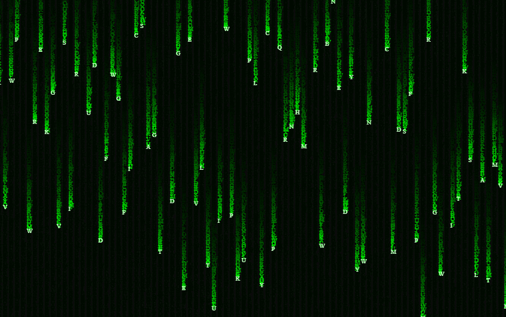
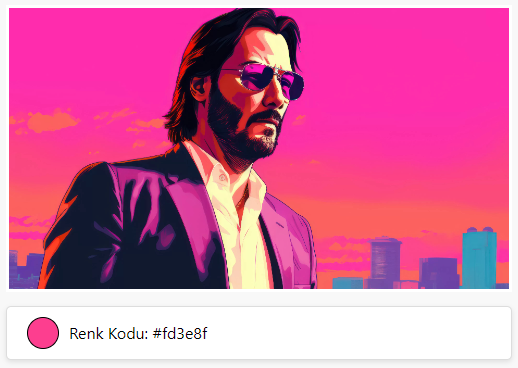

Proje

Şahin Map
Hava durumunu öğrenmek ve haritalar için yaptığım projem.
Proje

Smith Store
Geliştirme aşamasında olan uygulama mağazam.
Oyun

Turkish Eylence Packeti
Garrys Mod için 600 modlu koleksiyonum.
Proje

Smith OS
Saçma sapan eklemelerden uzak sade bir windows. Üstelik daha hızlı!
Proje

Türkiye Portalı
Ülkemizle alakalı resmi verileri inceleyebileceğiniz bir portal.
Proje

Deprem Takip
Anlık olarak afad ve kandili den bilgi çeken deprem takip sistemi.
Proje

Oyunlar Menüsü
Yaptığım veya internetten aldığım HTML oyunlarının portalı.
Proje
ESET31
Underdevelopment
Proje

Matrix Text
Gerçek dünyadan matrixde olanları izlediğimiz ekran.
Proje

Color Picker
İstediğiniz dosyada seçtiğiniz bölgedeki rengi öğrenmenizi sağlar
Proje

Doldur
Doldur2